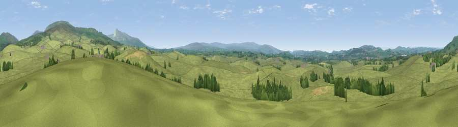

Viewpoint near Ireby
#14715 in England · top 46% of its area beats it · near Ireby · path 266 mWhere it is
The exact computed spot (SD 64475 74875). Click the marker for map links.
Public access: the nearest public right of way is about 266 m away — the final stretch may cross private land. Computed from Natural England's CRoW access layer and OpenStreetMap rights of way — not the legal definitive map. Always verify locally.
The view, rendered

A 360° render of this exact spot computed from the terrain model, tree cover and land cover — summer colours, afternoon light, calibrated against photographs of famous viewpoints. Real trees, hedges and buildings will differ in detail.
The panorama
Grey silhouette: terrain skyline in each direction (720 bearings, Earth curvature and refraction included). Dashed green: skyline with trees (+15 m) and buildings (+8 m) as obstacles. Blue strip: how far the ground is visible on each bearing.
Where the view opens
Wedge length = distance to the farthest visible ground on that bearing (vegetation-aware). Rings at 10, 25 and 50 km.
What fills the view
93% grassland · 5% woodland · 1% cropland
Angular shares of the visible panorama (visual magnitude), not map area. Landscape diversity 0.12 (0–1 Shannon).
Key numbers
More beautiful places nearby
The staircase of upgrades: each row has a higher view potential than everything closer. Driving times are estimates from straight-line distance, calibrated against real road routing — check an actual route before setting out.
| Place | Direction | Drive | Score |
|---|---|---|---|
| Viewpoint near Leck | N · 4 km | ~8 min | 63.9 |
| Tow Scar | ENE · 4 km | ~9 min | 73.1 |
| Dodson's Hill | NE · 5 km | ~11 min | 74.9 |
| Brownthwaite Pike | N · 6 km | ~12 min | 76.8 |
| Barbon Low Fell | N · 6 km | ~13 min | 77.9 |
| Viewpoint near Ingleton | E · 10 km | ~19 min | 79.5 |
| Crag Hill | NNE · 10 km | ~19 min | 80.0 |
| Warton Crag | W · 15 km | ~27 min | 83.2 |
54.16843, -2.54564 · source: screening · position refined by local search. Computed location — check access rights before visiting.